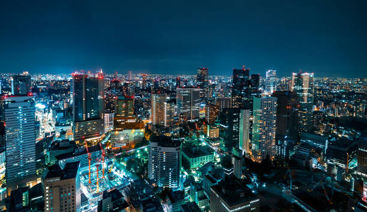
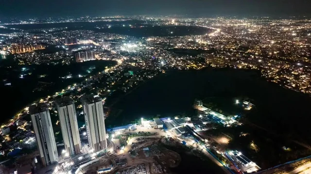

Hyderabad is renowned for its unique fusion of South and North Indian traditions, reflected in its language, attire, festivals, and music.
The city celebrates a variety of festivals with great fervor, including Diwali, Eid, and Bonalu.
Its diverse population adds to its cultural richness, making it a cosmopolitan hub.

Modern Hyderabad
Today, Hyderabad is one of India's leading IT and biotechnology hubs, often referred to as "Cyberabad."
It is also a top tourist destination, famous for its Hyderabadi Biryani, pearls, and warm hospitality.
With a perfect mix of history, innovation, and culture, Hyderabad continues to be a shining jewel of India.

Hyderabad
Hyderabad boasts a range of modern shopping malls like Forum Sujana Mall, Inorbit Mall, and GVK One Mall, offering international and local brands, restaurants, cinemas, and entertainment zones.
The city is a food lover's paradise, known for both traditional dishes like Hyderabadi Biryani and modern dining options in restaurants, food courts, and rooftop cafes.
The Hitech City and Banjara Hills areas are known for their high-end shopping, while Jambagh Market and Laad Bazaar offer traditional jewelry and crafts.